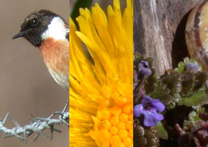

De Putten revisited
zondag 16 maart 2003 | Natuur
Ik kreeg er maar niet genoeg van: enkele aanvullingen bij de reeks van gisteren.

zondag 16 maart 2003 | Natuur
Ik kreeg er maar niet genoeg van: enkele aanvullingen bij de reeks van gisteren.

Frederik Vandaele op 16 maart 2003
Thank you Sir.
Sir Psycho op 16 maart 2003
Enorm knappe foto's!